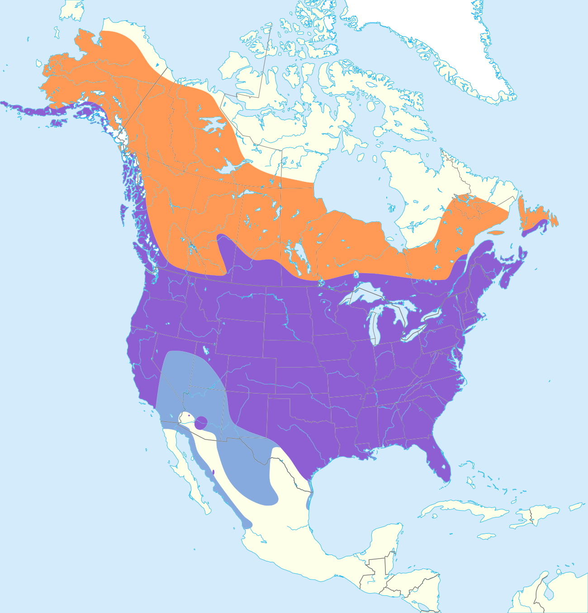
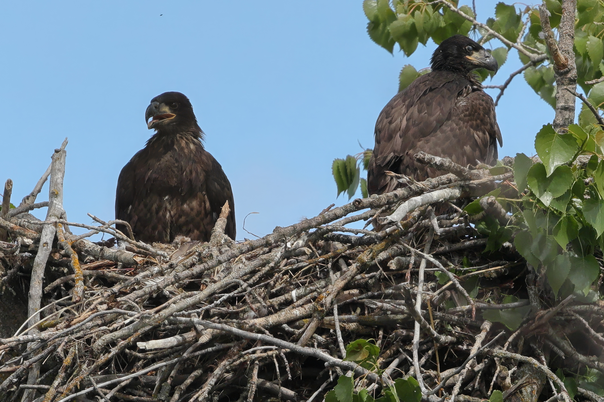
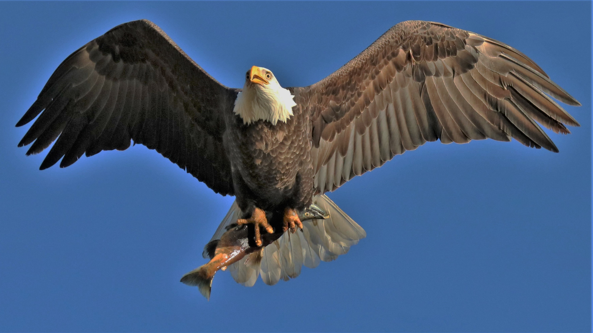
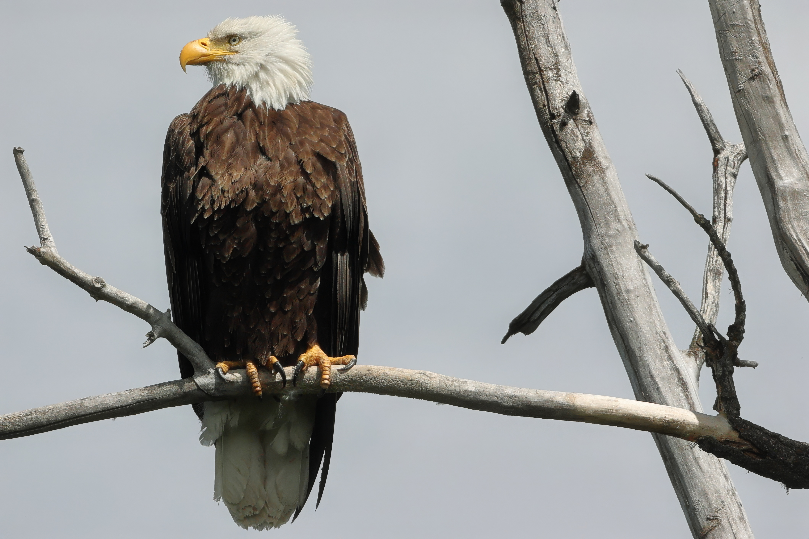

Bald Eagle
Description
The adult Bald Eagle is between 3-6.5kg and can have a wingspan of 2.6m. The Bald Eagle has a white plumage at the head and tail, with dark brown feathers elsewhere. Mature Bald Eagles have a yellow beak. Female Bald Eagles are larger than males.
Immature and baby Bald Eagles have a brown and white plumage, and a black beak. They take around five years to mature fully and to gain the distinctive and recognisable adult appearance.
Habitat and Geography

The Bald Eagle is found all across the North American continent and is only found on it. They are present throughout the United States, Canada, and northern Mexico.
Bald Eagle habitats include mountain and foothill forests, coastal wetlands, lakes, reservoirs, rivers, coastal wetlands, and others.
Biology
Bald Eagles are opportunistic, and are well suited to hunting. They possess pointed beaks and powerful legs containing large talons. They are aggressive and will "harass" other birds to drop food for the eagle to eat. They would also rather swim to the shore with a fish than lose it. Bald Eagles prefer fish, but will also eat various other things such as carrion, waterfowl, small mammals, &c.
The Bald Eagle, while people know it from a particularly distinctive call, actually have a high-pitched "voice", and are instead represented by popular media by a different species. They will call near their nests and in-flight.
Bald Eagles will build and rebuild their nests throughout life. Nests are built in the upper canopy of the tree and they will be present near water. They become aggressive during breeding season and will fight each other over territory, and begin nesting around April.
After nesting, two to three dull white or creamy yellow eggs are laid. The incubation period for the eggs are 34-36 days, and, after the baby eagle hatches, will be cared for for around eleven weeks. Siblings will attack their weaker counterparts, and many will die early, and chicks will learn to fly at six weeks.
The predator, or at least, stronger neighbor is the human, which almost hunted them to extinction, but the population of the species is now slowly growing due to conservation efforts and legislation. They are the national animal of the United States.
Media



Sources
- IUCN. (n.d.). Bald Eagle. Red List. https://www.iucnredlist.org/es/species/22695144/264598530
- Alaska Department of Fish and Game. (n.d.). Bald Eagle. https://www.adfg.alaska.gov/index.cfm?adfg=baldeagle.main
- California Department of Fish and Wildlife. (n.d.). Bald Eagles in California. https://wildlife.ca.gov/Conservation/Birds/Bald-Eagle